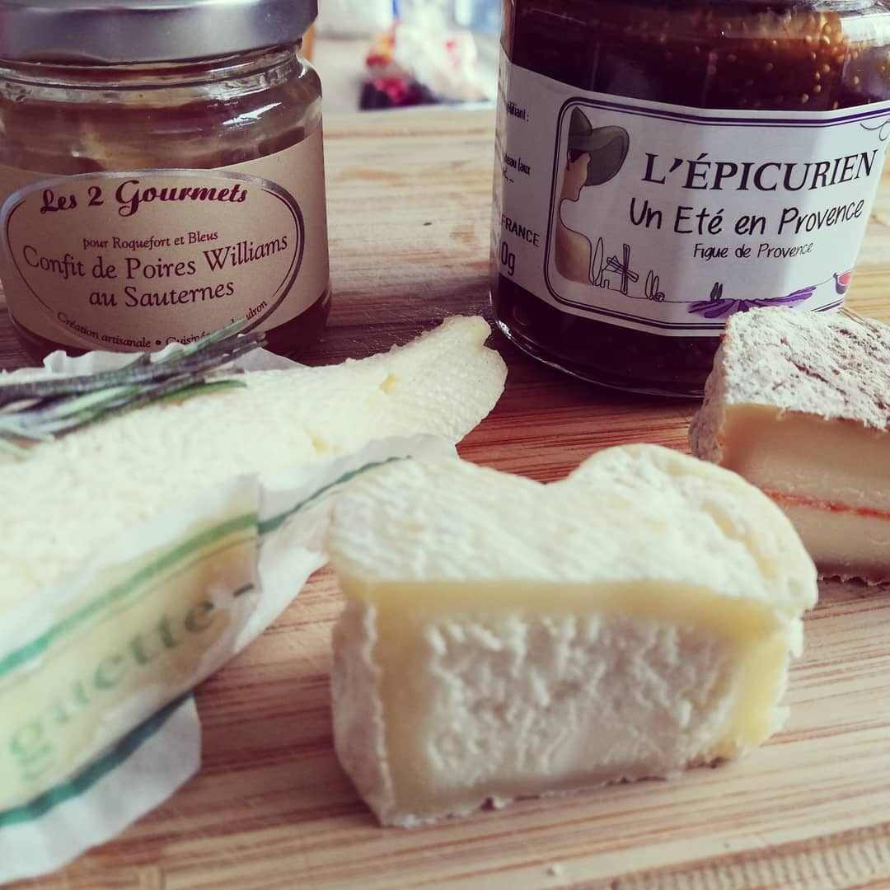

The stinky cheeses of France and excuisite jams. Fantastic combo. And the first time in my whole...
The stinky cheeses of France and excuisite jams. Fantastic combo. And the first time in my whole life I found a cheese that was too much for me. It came in the shape of a heart (of all shapes). And smelled like a latrine that was used by men as well as gorillas for the lenght of the Cannes film festival without ever being cleant.
#foodisthebest #stinkycheese
